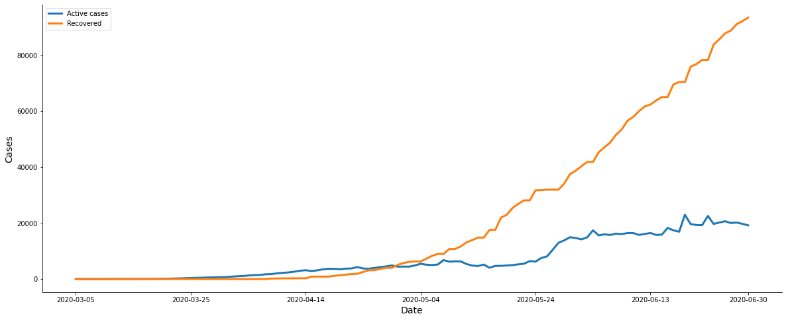
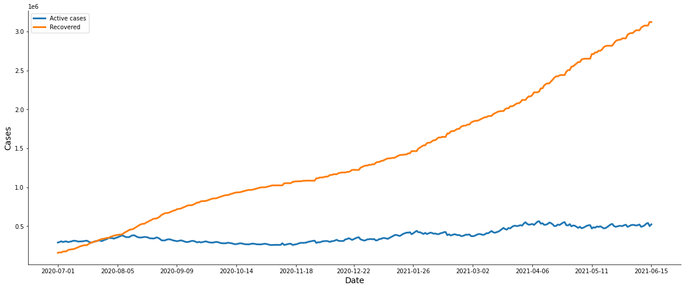

Notebook used to split the raw data until June 30, 2020 and after this date. The first dataset will be used in the study to train the models and the other one can be used to test the models.
Libraries¶
Import of some libraries that will be used.
[1]:
import numpy as np
import pandas as pd
import matplotlib.pyplot as plt
Data¶
COVID-19 data in Brazil provided by
[2]:
# Reading data - wcota
data_path = 'https://raw.githubusercontent.com/wcota/covid19br/master/cases-brazil-states.csv'
df = pd.read_csv(data_path)
df.head()
[2]:
| epi_week | date | country | state | city | newDeaths | deaths | newCases | totalCases | deathsMS | totalCasesMS | deaths_per_100k_inhabitants | totalCases_per_100k_inhabitants | deaths_by_totalCases | recovered | suspects | tests | tests_per_100k_inhabitants | vaccinated | vaccinated_per_100k_inhabitants | vaccinated_second | vaccinated_second_per_100k_inhabitants | |
|---|---|---|---|---|---|---|---|---|---|---|---|---|---|---|---|---|---|---|---|---|---|---|
| 0 | 9 | 2020-02-25 | Brazil | SP | TOTAL | 0 | 0 | 1 | 1 | 0 | 0 | 0.0 | 0.00218 | 0.0 | NaN | NaN | NaN | NaN | NaN | NaN | NaN | NaN |
| 1 | 9 | 2020-02-25 | Brazil | TOTAL | TOTAL | 0 | 0 | 1 | 1 | 0 | 0 | 0.0 | 0.00047 | 0.0 | NaN | NaN | NaN | NaN | NaN | NaN | NaN | NaN |
| 2 | 9 | 2020-02-26 | Brazil | SP | TOTAL | 0 | 0 | 0 | 1 | 0 | 1 | 0.0 | 0.00218 | 0.0 | NaN | NaN | NaN | NaN | NaN | NaN | NaN | NaN |
| 3 | 9 | 2020-02-26 | Brazil | TOTAL | TOTAL | 0 | 0 | 0 | 1 | 0 | 1 | 0.0 | 0.00047 | 0.0 | NaN | NaN | NaN | NaN | NaN | NaN | NaN | NaN |
| 4 | 9 | 2020-02-27 | Brazil | SP | TOTAL | 0 | 0 | 0 | 1 | 0 | 1 | 0.0 | 0.00218 | 0.0 | NaN | NaN | NaN | NaN | NaN | NaN | NaN | NaN |
[ ]:
df.shape
(12894, 22)
Data until June 30¶
First dataset until June 30.
[16]:
date = '2020-06-30'
df_june = df[df['date'] <= date].copy()
print(df_june.shape)
df_june.tail()
(3094, 22)
[16]:
| epi_week | date | country | state | city | newDeaths | deaths | newCases | totalCases | deathsMS | totalCasesMS | deaths_per_100k_inhabitants | totalCases_per_100k_inhabitants | deaths_by_totalCases | recovered | suspects | tests | tests_per_100k_inhabitants | vaccinated | vaccinated_per_100k_inhabitants | vaccinated_second | vaccinated_second_per_100k_inhabitants | |
|---|---|---|---|---|---|---|---|---|---|---|---|---|---|---|---|---|---|---|---|---|---|---|
| 3089 | 27 | 2020-06-30 | Brazil | SC | TOTAL | 17 | 341 | 1298 | 26354 | 341 | 26354 | 4.75939 | 367.82665 | 0.01294 | 20505.0 | 5540.0 | 90752.0 | 1266.63901 | NaN | NaN | NaN | NaN |
| 3090 | 27 | 2020-06-30 | Brazil | SE | TOTAL | 23 | 676 | 594 | 25411 | 676 | 25411 | 29.40798 | 1105.45283 | 0.02660 | 10109.0 | 11886.0 | 44299.0 | 1927.13608 | NaN | NaN | NaN | NaN |
| 3091 | 27 | 2020-06-30 | Brazil | SP | TOTAL | 365 | 14763 | 6235 | 281380 | 14763 | 281380 | 32.15006 | 612.77401 | 0.05247 | 49295.0 | 263250.0 | 602384.0 | 1311.83901 | NaN | NaN | NaN | NaN |
| 3092 | 27 | 2020-06-30 | Brazil | TO | TOTAL | 4 | 204 | 458 | 11222 | 200 | 10764 | 12.96995 | 713.47464 | 0.01818 | 6916.0 | 768.0 | 19882.0 | 1264.06191 | NaN | NaN | NaN | NaN |
| 3093 | 27 | 2020-06-30 | Brazil | TOTAL | TOTAL | 1317 | 59792 | 39680 | 1412669 | 59594 | 1402041 | 28.23631 | 667.12209 | 0.04233 | 792488.0 | 739535.0 | 3203771.0 | 1512.95626 | NaN | NaN | NaN | NaN |
[19]:
# Dataset from RJ state
state = 'RJ'
df_state = df_june[df_june.state == state].reset_index()
print(df_state.shape)
df_state.head()
(118, 23)
[19]:
| index | epi_week | date | country | state | city | newDeaths | deaths | newCases | totalCases | deathsMS | totalCasesMS | deaths_per_100k_inhabitants | totalCases_per_100k_inhabitants | deaths_by_totalCases | recovered | suspects | tests | tests_per_100k_inhabitants | vaccinated | vaccinated_per_100k_inhabitants | vaccinated_second | vaccinated_second_per_100k_inhabitants | |
|---|---|---|---|---|---|---|---|---|---|---|---|---|---|---|---|---|---|---|---|---|---|---|---|
| 0 | 18 | 10 | 2020-03-05 | Brazil | RJ | TOTAL | 0 | 0 | 1 | 1 | 0 | 1 | 0.0 | 0.00579 | 0.0 | NaN | NaN | NaN | NaN | NaN | NaN | NaN | NaN |
| 1 | 23 | 10 | 2020-03-06 | Brazil | RJ | TOTAL | 0 | 0 | 1 | 2 | 0 | 1 | 0.0 | 0.01158 | 0.0 | NaN | NaN | NaN | NaN | NaN | NaN | NaN | NaN |
| 2 | 29 | 10 | 2020-03-07 | Brazil | RJ | TOTAL | 0 | 0 | 0 | 2 | 0 | 2 | 0.0 | 0.01158 | 0.0 | NaN | NaN | NaN | NaN | NaN | NaN | NaN | NaN |
| 3 | 37 | 11 | 2020-03-08 | Brazil | RJ | TOTAL | 0 | 0 | 1 | 3 | 0 | 3 | 0.0 | 0.01738 | 0.0 | NaN | NaN | NaN | NaN | NaN | NaN | NaN | NaN |
| 4 | 45 | 11 | 2020-03-09 | Brazil | RJ | TOTAL | 0 | 0 | 0 | 3 | 0 | 3 | 0.0 | 0.01738 | 0.0 | NaN | NaN | NaN | NaN | NaN | NaN | NaN | NaN |
[20]:
# Creating new recovered column
df_state["newRecovered"] = df_state["recovered"].diff()
df_state.newRecovered.fillna(0, inplace=True)
df_state.recovered.fillna(0, inplace=True)
[21]:
# Creating active cases column (Infected)
active_infected = [df_state["totalCases"].iloc[0]]
for nc, nr in zip(df_state["newCases"].iloc[1:],
df_state["newRecovered"].iloc[1:]):
active_infected.append(active_infected[-1] + nc - nr)
df_state["activeCases"] = active_infected
[46]:
# Ploting Active Cases and Recovered curves from RJ state
plot1 = 'activeCases'
plot2 = 'recovered'
fig, ax = plt.subplots(figsize=(20, 8))
ax1 = ax.plot(df_state.date, df_state[plot1], label='Active cases', linewidth=3)
ax2 = ax.plot(df_state.date, df_state[plot2], label='Recovered', linewidth=3)
ax.set_xlabel('Date', size=14)
ax.set_ylabel('Cases', size=14)
ax.legend()
show_index = [0,20,40,60,80,100,117]
ax.set_xticks(df_state.loc[show_index, 'date'])
ax.set_xticklabels(df_state.loc[show_index, 'date'])
ax.spines['top'].set_visible(False)
ax.spines['right'].set_visible(False)
plt.show()

After June 30¶
Dataset with the data after June 30.
[ ]:
df_after_june = df[df['date'] > date].copy()
print(df_after_june.shape)
df_after_june.head()
(9800, 22)
| epi_week | date | country | state | city | newDeaths | deaths | newCases | totalCases | deathsMS | totalCasesMS | deaths_per_100k_inhabitants | totalCases_per_100k_inhabitants | deaths_by_totalCases | recovered | suspects | tests | tests_per_100k_inhabitants | vaccinated | vaccinated_per_100k_inhabitants | vaccinated_second | vaccinated_second_per_100k_inhabitants | |
|---|---|---|---|---|---|---|---|---|---|---|---|---|---|---|---|---|---|---|---|---|---|---|
| 3094 | 27 | 2020-07-01 | Brazil | AC | TOTAL | 5 | 370 | 462 | 13715 | 370 | 13715 | 41.95321 | 1555.10327 | 0.02698 | 7650.0 | 288.0 | 32164.0 | 3646.98079 | NaN | NaN | NaN | NaN |
| 3095 | 27 | 2020-07-01 | Brazil | AL | TOTAL | 20 | 1072 | 857 | 36819 | 1072 | 36819 | 32.12123 | 1103.23828 | 0.02912 | 28236.0 | 2156.0 | 79652.0 | 2386.67904 | NaN | NaN | NaN | NaN |
| 3096 | 27 | 2020-07-01 | Brazil | AM | TOTAL | 20 | 2843 | 1461 | 72284 | 2843 | 72284 | 68.59533 | 1744.05376 | 0.03933 | 58822.0 | 2446.0 | 165743.0 | 3999.01366 | NaN | NaN | NaN | NaN |
| 3097 | 27 | 2020-07-01 | Brazil | AP | TOTAL | 3 | 420 | 435 | 28927 | 420 | 28927 | 49.66118 | 3420.35470 | 0.01452 | 14168.0 | 4327.0 | 51162.0 | 6049.44125 | NaN | NaN | NaN | NaN |
| 3098 | 27 | 2020-07-01 | Brazil | BA | TOTAL | 49 | 1902 | 3178 | 76485 | 1902 | 76485 | 12.78822 | 514.25180 | 0.02487 | 50924.0 | 78797.0 | 242798.0 | 1632.46793 | NaN | NaN | NaN | NaN |
[47]:
# Dataset from SP state
state = 'SP'
df_state = df_after_june[df_after_june.state == state].reset_index()
print(df_state.shape)
df_state.head()
(350, 23)
[47]:
| index | epi_week | date | country | state | city | newDeaths | deaths | newCases | totalCases | deathsMS | totalCasesMS | deaths_per_100k_inhabitants | totalCases_per_100k_inhabitants | deaths_by_totalCases | recovered | suspects | tests | tests_per_100k_inhabitants | vaccinated | vaccinated_per_100k_inhabitants | vaccinated_second | vaccinated_second_per_100k_inhabitants | |
|---|---|---|---|---|---|---|---|---|---|---|---|---|---|---|---|---|---|---|---|---|---|---|---|
| 0 | 3119 | 27 | 2020-07-01 | Brazil | SP | TOTAL | 267 | 15030 | 8555 | 289935 | 15030 | 289935 | 32.73151 | 631.40463 | 0.05184 | 157845.0 | 263250.0 | 602384.0 | 1311.83901 | NaN | NaN | NaN | NaN |
| 1 | 3147 | 27 | 2020-07-02 | Brazil | SP | TOTAL | 321 | 15351 | 12244 | 302179 | 15351 | 302179 | 33.43057 | 658.06894 | 0.05080 | 162851.0 | 263250.0 | 602384.0 | 1311.83901 | NaN | NaN | NaN | NaN |
| 2 | 3175 | 27 | 2020-07-03 | Brazil | SP | TOTAL | 343 | 15694 | 8523 | 310702 | 15694 | 310702 | 34.17754 | 676.62987 | 0.05051 | 162851.0 | 272384.0 | 602384.0 | 1311.83901 | NaN | NaN | NaN | NaN |
| 3 | 3203 | 27 | 2020-07-04 | Brazil | SP | TOTAL | 302 | 15996 | 1828 | 312530 | 15996 | 312530 | 34.83522 | 680.61079 | 0.05118 | 174289.0 | 277156.0 | 602384.0 | 1311.83901 | NaN | NaN | NaN | NaN |
| 4 | 3231 | 28 | 2020-07-05 | Brazil | SP | TOTAL | 82 | 16078 | 7649 | 320179 | 16078 | 320179 | 35.01379 | 697.26836 | 0.05022 | 175439.0 | 277156.0 | 602384.0 | 1311.83901 | NaN | NaN | NaN | NaN |
[48]:
# Creating new recovered column
df_state["newRecovered"] = df_state["recovered"].diff()
df_state.newRecovered.fillna(0, inplace=True)
df_state.recovered.fillna(0, inplace=True)
[49]:
# Creating active cases column (Infected)
active_infected = [df_state["totalCases"].iloc[0]]
for nc, nr in zip(df_state["newCases"].iloc[1:],
df_state["newRecovered"].iloc[1:]):
active_infected.append(active_infected[-1] + nc - nr)
df_state["activeCases"] = active_infected
[90]:
# Ploting Active Cases and Recovered curves from SP state
plot1 = 'activeCases'
plot2 = 'recovered'
fig, ax = plt.subplots(figsize=(20, 8))
ax1 = ax.plot(df_state.date, df_state[plot1], label='Active cases', linewidth=3)
ax2 = ax.plot(df_state.date, df_state[plot2], label='Recovered', linewidth=3)
ax.set_xlabel('Date', size=14)
ax.set_ylabel('Cases', size=14)
ax.legend()
show_index = np.round(np.linspace(0, 349, 11))
ax.set_xticks(df_state.loc[show_index, 'date'])
ax.set_xticklabels(df_state.loc[show_index, 'date'])
ax.spines['top'].set_visible(False)
ax.spines['right'].set_visible(False)
plt.show()
